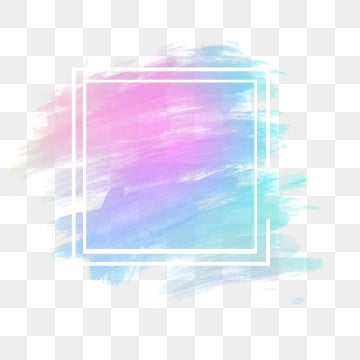

This is rachel. As we can see that this is a ring donut, original glazed to be exact. Maybe you would think that the portrayal of rachel as a donut is quite accurate, the donut is sweet and so does a particular person think of rachel's looks. The desert is very popular amongst people in general and so is rachel, proven by her liveliness on social media. And lastly it is hollow at the middle, as rachel is also empty headed (jokes ofc).
However for me, one image is not enough to represent rachel, one picture is merely the scratch of a mountain rachel is. Therefore, I hereby give you, another picture of rachel. Amazing isn't it? After all of the sweetness people said that rachel is, I think she is as bitter as coffee. I mean, have you seen her face? C'mon man that is not sweet! She is also very fluid, given her love hate relationship with Josh, she flows wherever Josh flows, I know you haven't moved on. Despite the bitterness and fluidity a coffee is, coffee is notoriously known for keeping people going for the day. That's right, rachel gives people spirit to move on night in night out, addressing this will obviously make rachel's empty head grow more massive nonetheless it is a fact. See you later pig.
{kind=link}
{kind=link}